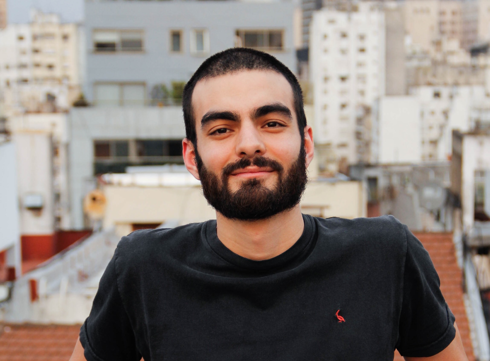

Hi! My name is Renzo Cammi
I was born in Argentina and currently living in Buenos Aires. I spent my childhood living in many countries of South America. I am ending my career in surveying engineering in the University of Buenos Aires (UBA). Self-taught coding in Python.
I lived in 4 different countries and in neither of those places do they know what surveying is.
Surveying is the science of measuring the land. The surveyor is the one who resolves the territorial application of the corresponding Law, through measurement. With the advancement of technology, different measurement techniques emerged that allowed the surveyor’s role to become even more relevant within society. In other words, the surveyor covers small and large scales.
This huge advance results in big geospatial data clouds. These data carries a story that must be discovered. That is why I believe it is necessary to squeeze it to the maximum to arrive at data-driven solutions.
I was part of the team for updating the cadastre of the province of Corrientes. Currently, I generate geospatial data for the urbanization of the Padre Carlos Mugica neighborhood. At the same time, I’m part of the Sports Analytics World start up and active in the sports analytics community.
In my free time I created from scratch a soccer player scouting tool for the 5 major leagues in Europe. It is uploaded to the web and is open to the public.
You can find me in all my networks, so do not hesitate and follow me!